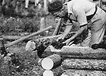
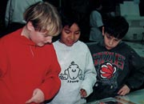
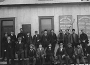
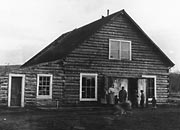
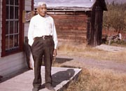
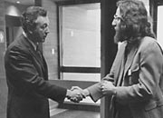
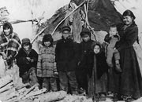

Au cours des 100 dernières années, il y a eu de nombreux changements grâce aux efforts de l’ensemble des Yukonnais, qui ont travaillé dans le but de former le territoire dynamique que nous avons aujourd’hui.
Hah Yah Oo Tlay
Shádhël nigha
kwädür
Hah Yah Oo Tlay
Shádhël nigha
kwädür
C’est vrai Shàdhël
Les contes récités
pour toi…
Chanson tutchone du Sud (vers 1900) à propos de Shàdhël (Champagne) interprétée et transcrite par Daniel Tlen
Qu’est-ce qui vous a donné
l’envie
de parcourir des
milliers de kilomètres
de routes
poussiéreuses
et qu’est-ce qui vous a incité
à monter au pays de l’or…
Chanson écrite en 1978 par Jim Vautour et Manfred Janssen, musiciens yukonnais
Passer au tableau Qui nous étions; où nous en sommesLe Yukon, chez nous
(Ci-dessus) Joe et Gene Jacquot (années 30).
AY, collection Joe 92/26 nº 11
Claude Tidd encoche le bois et met de la mousse sur les coins de la cabane qu’il construit à la rivière Twelvemile, au nord de Dawson (août 1938).
AY, collection Tidd nº 8158
Visite des Archives du Yukon (1996).
AY, collection des Archives du Yukon
Employés de la British Yukon Navigation Company (BYN) (vers 1905). BYN était la section maritime de la White Pass & Yukon Route.
AY, collection Scott/Phelps, 89/31 nº 114
Un groupe de femmes et d’enfants à Fort Selkirk (vers 1920).
AY, collection Tidd, nº 7716
George Johnston à l’extérieur du poste de traite de Teslin (1967).
AY, collection Bullen, 82/354 nº 14
Le commissaire James Smith et Brian Speirs à l’ouverture des Archives du Yukon (décembre 1972).
AY, collection Bureau des affaires publiques du Yukon 81/18 f/14
Camp han à cinq kilomètres de Dawson (vers 1897).
AY, collection Adney, 81/9 nº 123